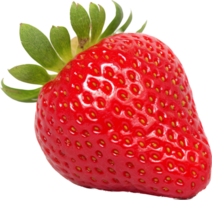
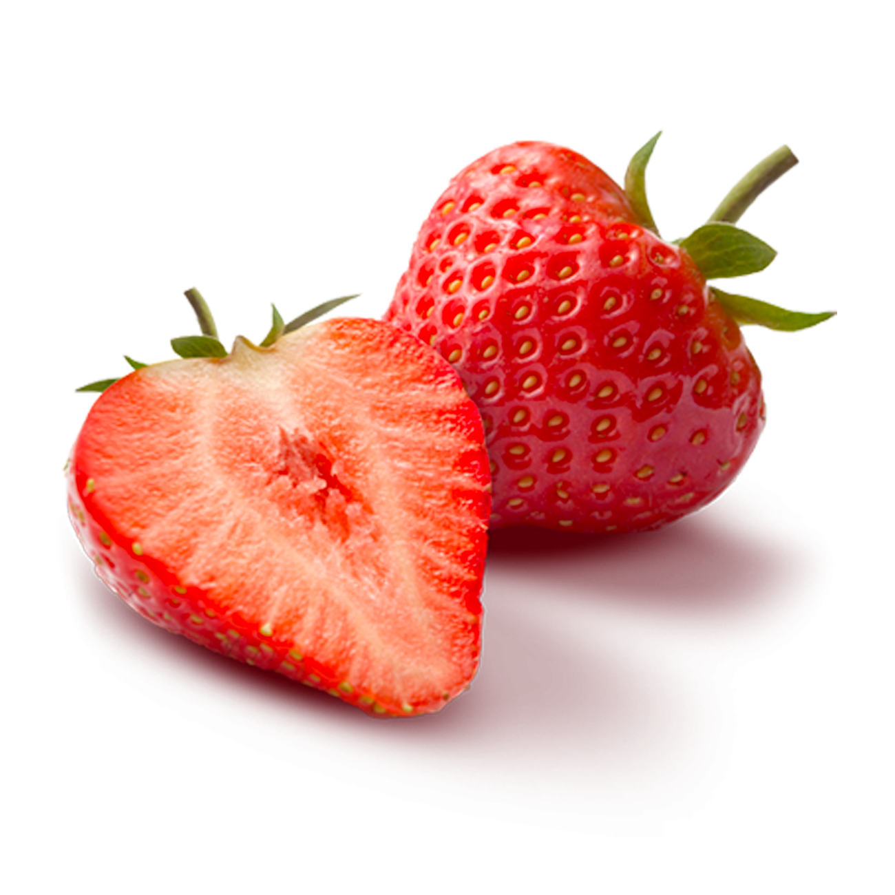

Strawberry
Strawberries are low-growing herbaceous plants with a fibrous root system and a crown from which arise basal leaves. The leaves are compound, typically with three leaflets, sawtooth-edged, and usually hairy.
The flowers, generally white, rarely reddish, are borne in small clusters on slender stalks arising, like the surface-creeping stems, from the axils of the leaves. As a plant ages, the root system becomes woody, and the “mother” crown sends out runners (e.g., stolons) that touch ground and root, thus enlarging the plant vegetatively. Botanically, the strawberry fruit is considered an “accessory fruit” and is not a true berry. The flesh consists of the greatly enlarged flower receptacle and is embedded with the many true fruits, or achenes, which are popularly called seeds.
The cultivated large-fruited strawberry (Fragaria ×ananassa) originated in Europe in the 18th century. Most countries developed their own varieties during the 19th century, and those are often specially suitable for the climate, day length, altitude, or type of production required in a particular region. Strawberries are produced commercially both for immediate consumption and for processing as frozen, canned, or preserved berries or as juice.
Given the perishable nature of the berries and the unlikelihood of mechanical picking, the fruit is generally grown near centres of consumption or processing and where sufficient labour is available. The berries are handpicked directly into small baskets and crated for marketing or put into trays for processing. Early crops can be produced under glass or plastic covering. Strawberries are very perishable and require cool dry storage.
The strawberry succeeds in a surprisingly wide range of soils and situations and, compared with other horticultural crops, has a low fertilizer requirement. It is, however, susceptible to drought and requires moisture-retaining soil or irrigation by furrow or sprinkler. Additionally, the plants are susceptible to nematodes and pathogenic soil fungi, and many growers sterilize the soil with chemicals such as methyl bromide prior to planting.
Runner plants are planted in early autumn if a crop is required the next year. If planted in winter or spring, the plants are deblossomed to avoid a weakening crop the first year. Plants are usually retained for one to four years. Runners may be removed from the spaced plants, or a certain number may be allowed to form a matted row alongside the original parent plants. In areas with severe winters, plants are put out in the spring and protected during the following winters by covering the rows with straw or other mulches.